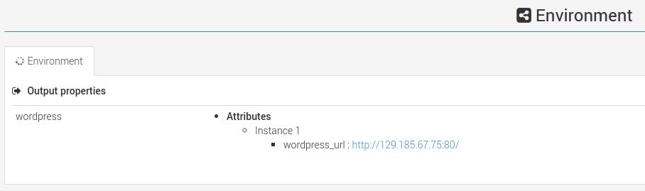

The 30 min Start Guide!
This is a step-by-step guide that describes how to build a Virtual Machine containing Alien4Cloud, Cloudify v2 bootstraped on AWS cloud.
How to Install
1. Prerequisites:
-
Download and install VirtualBox (Working with version 4.3.26 but older versions might work as well)
-
Download and install Vagrant (Working with version 1.7.2 but older versions might work as well)
-
Install triggers plugin for Vagrant:
vagrant plugin install vagrant-triggers(Working with version 0.5.0 but older versions might work as well) -
An active AWS account. Make sure you have all the account informations we will need later (user key, access key, key file and key pair)
2. VM Automated Install:
-
Download and unzip the package vm-alien4cloud-SM25 (for other version, see on the page footer). As a result, a subdirectory vm-alien4cloud should be created
-
Copy your .pem file to the directory
vm-alien4cloud/vm/key -
Edit the file
vm-alien4cloud/puppet/manifests/install.ppand set your aws “user key” and “access key” (userandapiKeyparameters), key file name and key pair (keyFileandkeyPairparameters) and finally changemachineNamePrefixandmanagementGroup. -
Change your working directory:
cd vm-alien4cloud/vm/centos-6 -
Execute the following command to build a new VM:
vagrant up -
At the first run, vagrant will download the base box which will be used to create the alien4cloud VM, then provision the VM with Puppet. The time needed to create a VM is around 30 minutes and depends on your internet connection speed.
-
At the end of the installation, you’ll see a message
==> alien4cloud: Notice: Finished catalog run in 1648.89 seconds. You can then access Alien4Cloud Web interface from a browser on the following address: http://192.168.32.10:8088
3. Deploy your application
To deploy this new application, just go on Applications > Deployments submenu.
{kind=link}
Zone A : Select an environment and a cloud
Keep the default environment Environment and select your cloud OpenStackCloud created above.
Zone B : Provider properties
Those properties depends on the provider implementation. You usualy have default settings.
Zone C : Topology required settings
Those basic settings are required for Compute nodes.
Zone D : Cloud resources matching
In this part, you will be able to check matching cloud resources and possible matching errors. This should not happen if your cloud is well configured.
Check that your application is up and running
Runtime view
On this submenu view Application > Runtime, you can have the detailed deployment
progress.

Wordpress url
Go back in the Application > Informations submenu to get the Wordpress application url and
test it !

And voilà !
How to Uninstall
If you would like to de-provision the VM and the associated cloud created by Alien4Cloud, just execute the following commands:
-
Change your working directory:
cd vm-alien4cloud/vm/centos-6 -
Run the following command:
vagrant destroy